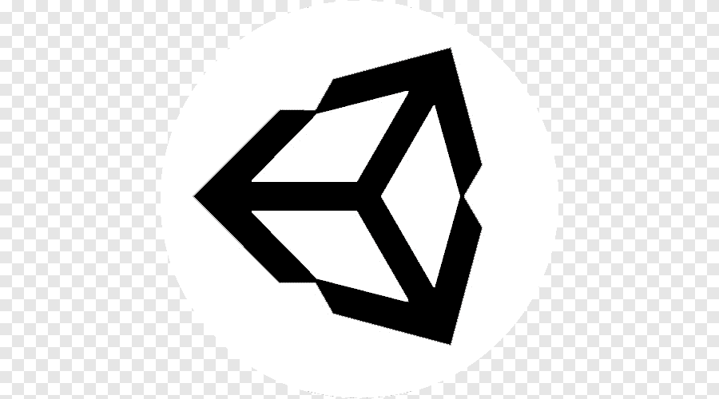

Simon van Strijp
Creative
Wie ben ik?
Ik ben een jonge profecional die sinds 2017 in de creative design wereld werkt. Mijn passies liggen bij mensen, technologie en verhalen. Deze passies probeer ik te vertalen in ontwerpen waarbij ik de wereld beter wil achterlaten dan hoe ik die gevonden heb.
Profecionele ervaring
Academieraad Cmd-viscom
Lid, voorzitter
2022-hedenEmber Glitch
Co-founder, 3D Artist en stagebegeleider
2017-hedenStage - Sticky Studios
Game Artist
Q 3&4 2016Stage - Team Reptile
Game Artist
Q 1&2 2016Museum dorestad
Kassa dienst, klusjes en tentoonstellingen opzetten
De zomers van 2010 t/m 2014Skills
Leiderschap
Machine thinking
Coding: HTML, CSS, Javascript, Java
3D Art
Animatie
Software
 3DS max
3DS max

Unity 3D
Substance Painter
Substance Designer
Photoshop